![]()
{kind=link}
flowchart LR
A["<div style='padding:20px;width:300px;height:auto;background-color:#add8e6;border:2px solid #000;font-size:32px;'>Open Data, public interest <br> entitlement to publicly funded data</div>"] <--> B["<div style='padding:20px;width:300px;height:auto;background-color:#90ee90;border:2px solid #000;font-size:32px;'>Privacy rights of <br> research subjects</div>"]
C["<div style='padding:20px;width:300px;height:auto;background-color:#add8e6;border:2px solid #000;font-size:32px;'>Right of first usage, <br> incentives to collect data in the first place</div>"] <--> D["<div style='padding:20px;width:300px;height:auto;background-color:#90ee90;border:2px solid #000;font-size:32px;'>Optimal and efficient gain of <br> knowledge by data reuse</div>"]
E["<div style='padding:20px;width:300px;height:auto;background-color:#add8e6;border:2px solid #000;font-size:32px;'>Reproducibility and verifiability of <br> published analyses</div>"] <--> F["<div style='padding:20px;width:300px;height:auto;background-color:#90ee90;border:2px solid #000;font-size:32px;'>Protect original authors against <br> inadequate burden and potential attacks</div>"]
Research Data Management & Open Data
Open Science in the research process
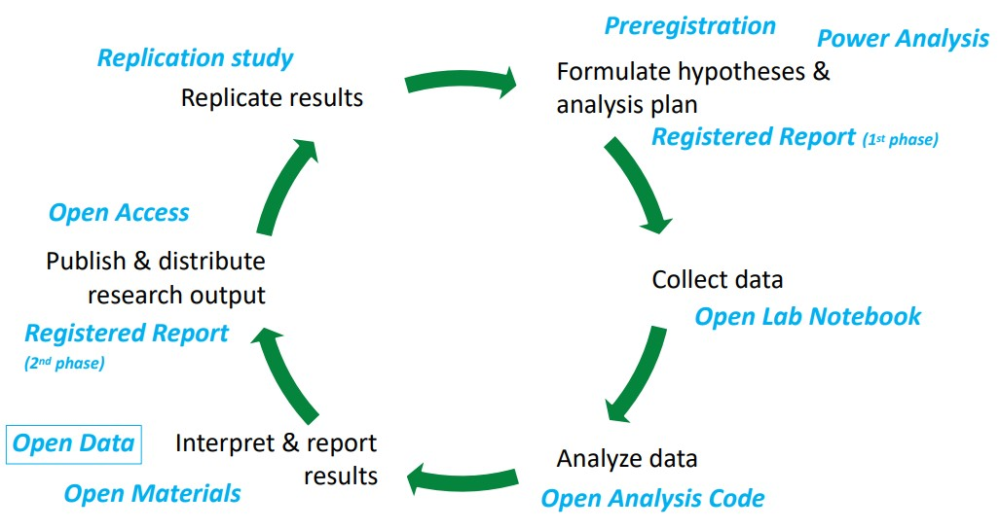
Why open data?
Why open data?
1. Nullius in verba
- take nobody’s word for it
- Motto of the oldest scientific society (Royal Society, founded 1660)
- Science is not built upon blind trust, but on verifiability.
- “Organized skepticism” (Merton, 1947)
Important
Only when raw data (and other research material) are shared organized skepticism can be enacted, and science can really be self-correcting. Open data is one part of good scientific practice.
Why open data?
2. Efficiency and Inclusiveness
- Speedy responses in outbreaks; share rare and hard-to-collect data
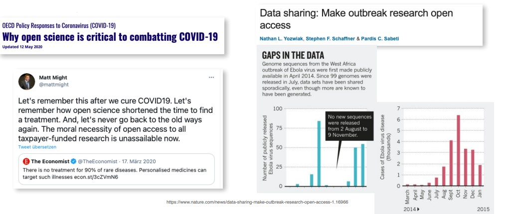
Important
The covid-19 pandemic has shown how fast scientific progress can be when we share our data and knowledge freely, and that free knowledge is a moral imperative.
Why open data?
3. Public money = public good
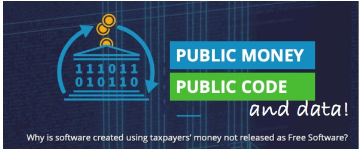
Important
Publicly funded research data does not belong to the researcher who collected it. S/he has the right of primary usage, but after that the data should be considered a public good (of course respecting privacy rights and applicable copyrights).
Why open data?
4. Data persistence
- never lose data due to a crashed hard disk drive
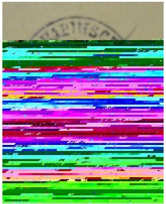
Important
A publicly funded repository is the right place for long term storage of research data – not your private USB stick, your personal university website (that vanishes after you change affiliation), or the journal’s online supplemental material that hides the data behind a paywall.
Why open data?
5. More and more funders and journals demand it.
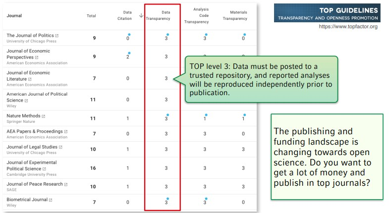
What is open data?
What is Data?
“The recorded factual material commonly retained by and accepted in the scientific community as necessary to validate research findings.” (EPSRC, 2018)
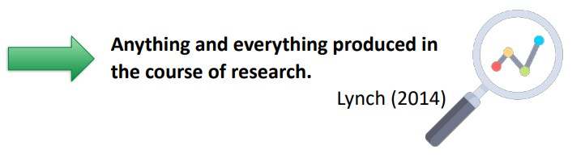
What is Data?
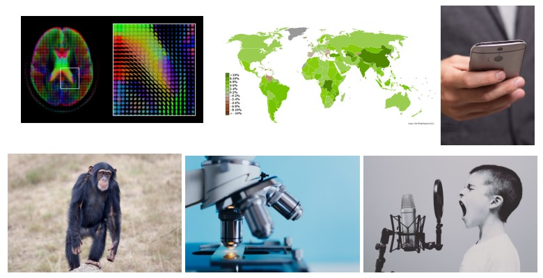
➙ we need field-specific definitions: What constitutes "research data"?
Example: Psychology
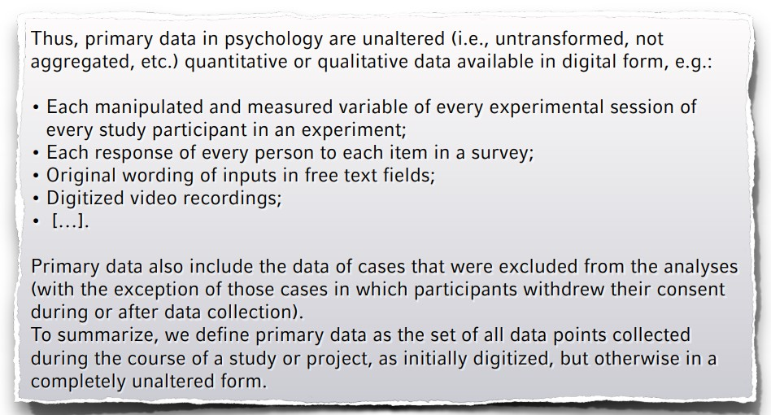
Recommendations of the German Psychological Association, https://psyarxiv.com/24ncs/
Not only open, but FAIR
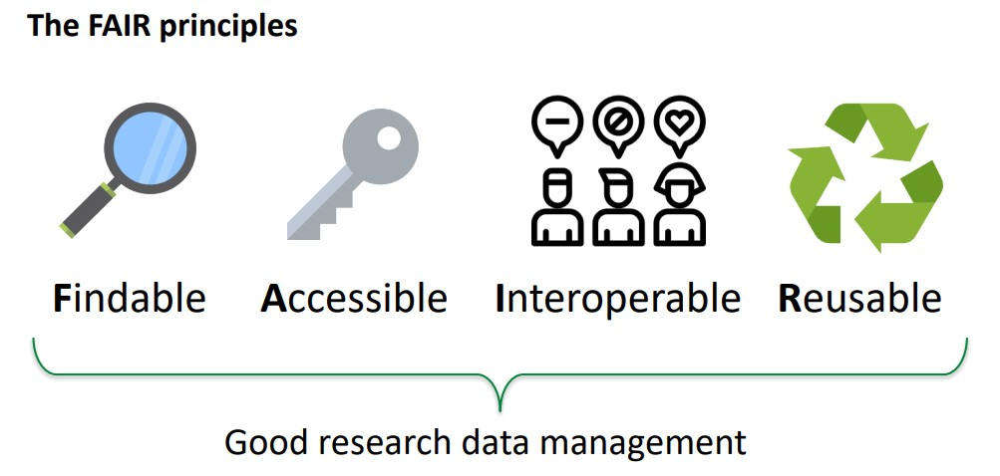
Balancing values:
Three fields of tension with
(human subject) data
Balancing values
Balancing values 1
flowchart LR
A["<div style='padding:20px;width:300px;height:auto;background-color:#add8e6;border:2px solid #000;font-size:24px;'>Open Data, public interest <br> entitlement to publicly funded data</div>"] <--> B["<div style='padding:20px;width:300px;height:auto;background-color:#90ee90;border:2px solid #000;font-size:24px;'>Privacy rights of <br> research subjects</div>"]
- Privacy rights > openness; but also: “legitimate interest” of research
- Ask participants for a broad consent of open reuse
- Restrict access with “scientific use files”; publish aggregated data (e.g., ratings of videos) without the primary data (videos)
- Sharing something > sharing nothing
- As open as possible, as restricted as necessary
Balancing values 2
flowchart LR C["<div style='padding:20px;width:300px;height:auto;background-color:#add8e6;border:2px solid #000;font-size:24px;'>Right of first usage, <br> incentives to collect data in the first place</div>"] <--> D["<div style='padding:20px;width:300px;height:auto;background-color:#90ee90;border:2px solid #000;font-size:24px;'>Optimal and efficient gain of <br> knowledge by data reuse</div>"]
- Right of first usage, possibility of embargo
- At the end of the day (resp., the embargo), all data are as open as possible
- Incentivize data sharing
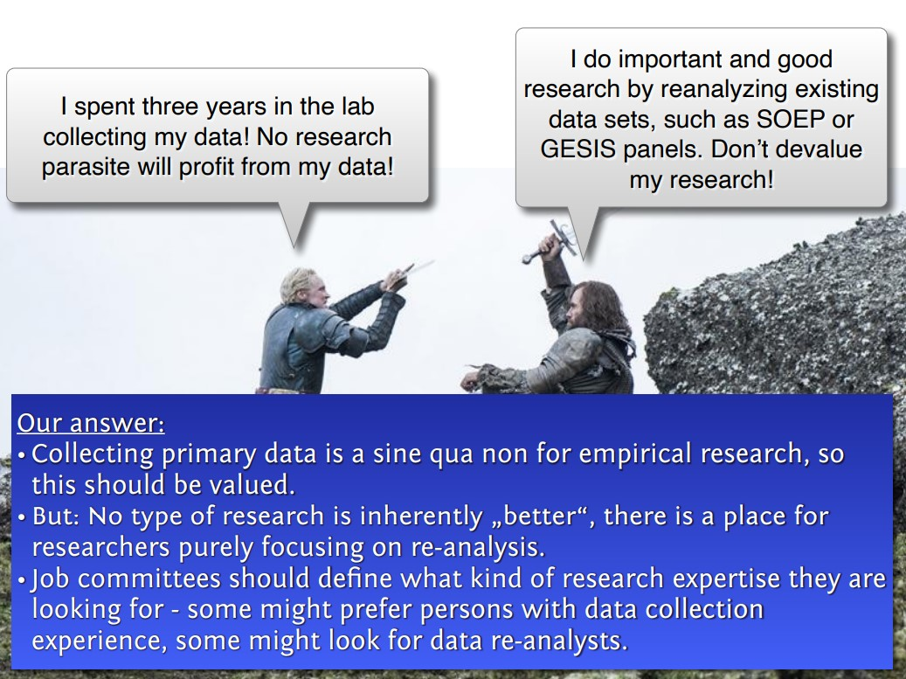
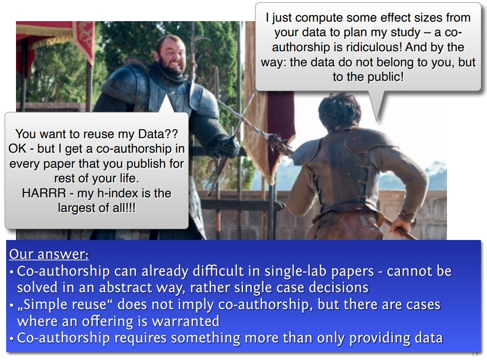
Balancing values 3
flowchart LR E["<div style='padding:20px;width:300px;height:auto;background-color:#add8e6;border:2px solid #000;font-size:24px;'>Reproducibility and verifiability of <br> published analyses</div>"] <--> F["<div style='padding:20px;width:300px;height:auto;background-color:#90ee90;border:2px solid #000;font-size:24px;'>Protect original authors against <br> inadequate burden and potential attacks</div>"]
- Primary focus: openness and transparency. Correcting errors is painful, but a necessary condition for doing science
- Data providers should be informed if their data are going to be reused or reanalyzed ➙ allows to prepare a reaction
Balancing values 3
flowchart LR E["<div style='padding:20px;width:300px;height:auto;background-color:#add8e6;border:2px solid #000;font-size:24px;'>Reproducibility and verifiability of <br> published analyses</div>"] <--> F["<div style='padding:20px;width:300px;height:auto;background-color:#90ee90;border:2px solid #000;font-size:24px;'>Protect original authors against <br> inadequate burden and potential attacks</div>"]
- Problematic asymmetry:
- Data provided ➙ often errors get detected
- No data provided ➙ no errors are detected (because not possible). Default assumption: “Everything is OK. Perfect paper, because no errors are spotted!”
- Making oneself vulnerable is good for science, and should also be good for reputation!
- Change default assumption? “No data ➙ Probably erroneous analysis.”
Success stories
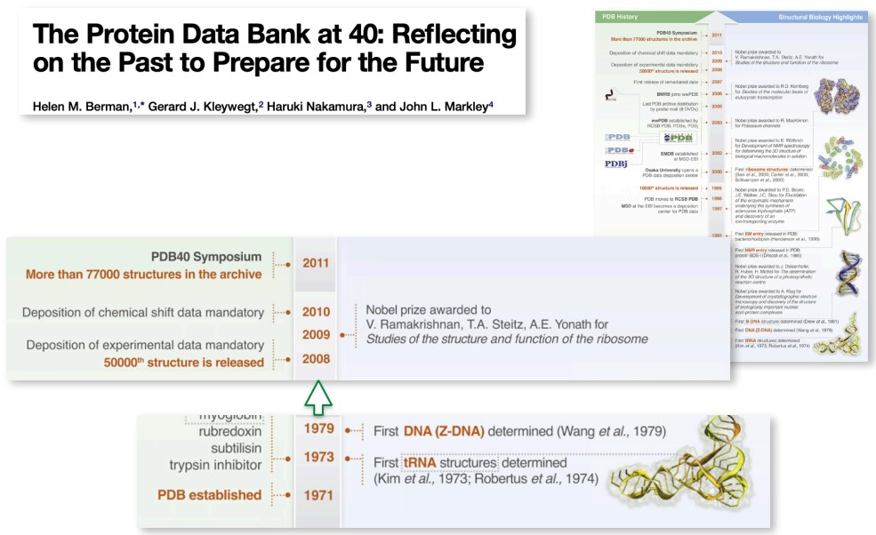
Resources
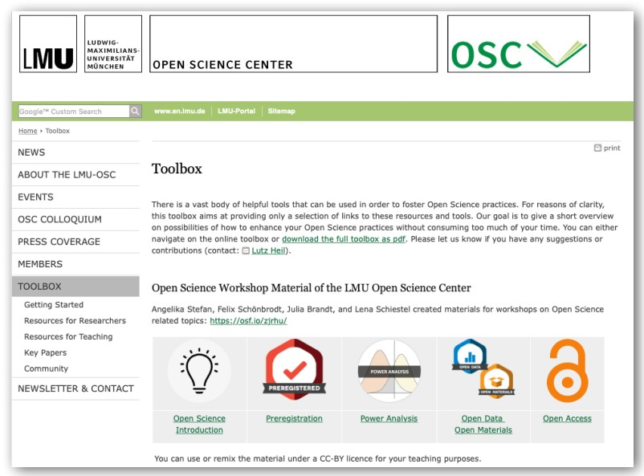
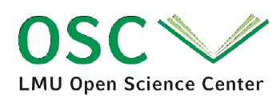
End
Contact
- @nicebread@scicomm.xyz
- ed.uml.ysp@tdorbneohcs.xilef
- https://www.nicebread.de
- https://github.com/nicebread